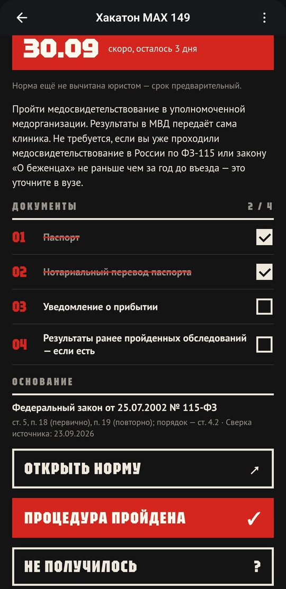

Первые
90 дней
Личный план иностранного студента в MAX
«ИИ в массы»: Иван Резников, Иван Пушкин, Александр Чичерин, Михаил Анцев
Хакатон Минобрнауки России и MAX, финал, Казань, 29.10.2026

Личный план иностранного студента в MAX
«ИИ в массы»: Иван Резников, Иван Пушкин, Александр Чичерин, Михаил Анцев
Хакатон Минобрнауки России и MAX, финал, Казань, 29.10.2026
И отвечает на два вопроса: гражданство и совпадает ли его случай

Даты посчитаны по правилам, рядом сколько дней осталось

Документы с отметками, адрес и часы работы, норма закона

В чате MAX за 7, 3 и 1 день до срока и на следующий день, если процедура не отмечена

Бот собирает вопрос в международную службу с датами студента

Приглашение и виза, «Госуслуги RuID», перевод паспорта, контакты вуза. Выбор вуза и гранты мы только исследуем

Отметка в одном месте видна в другом

Проверим правила со специалистом вуза и проведём первый тест со студентами
max.ru/t149_hakaton_max_bot